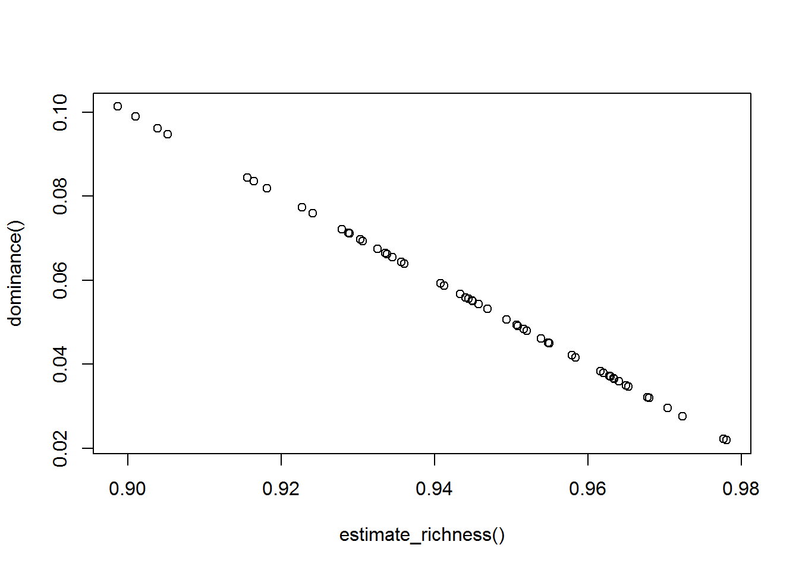
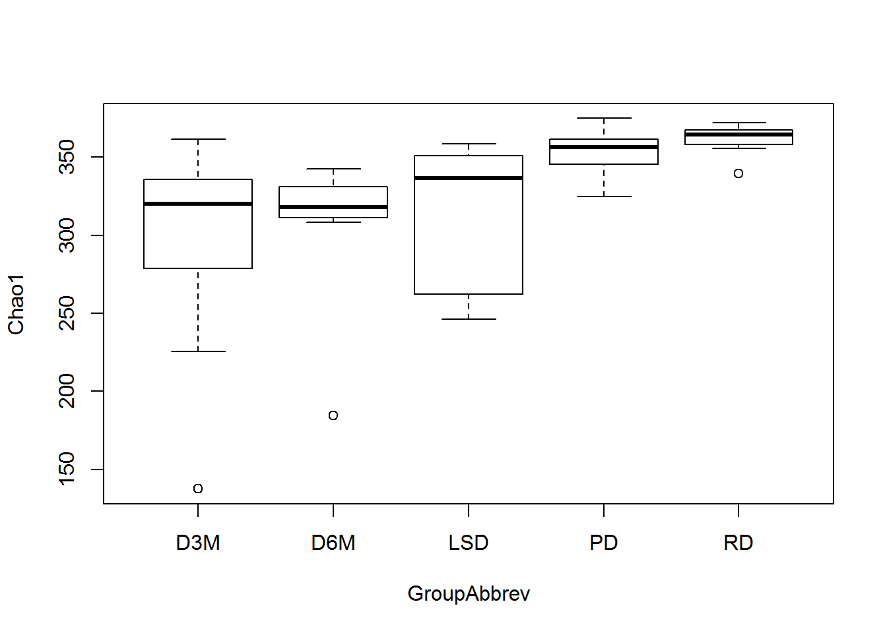
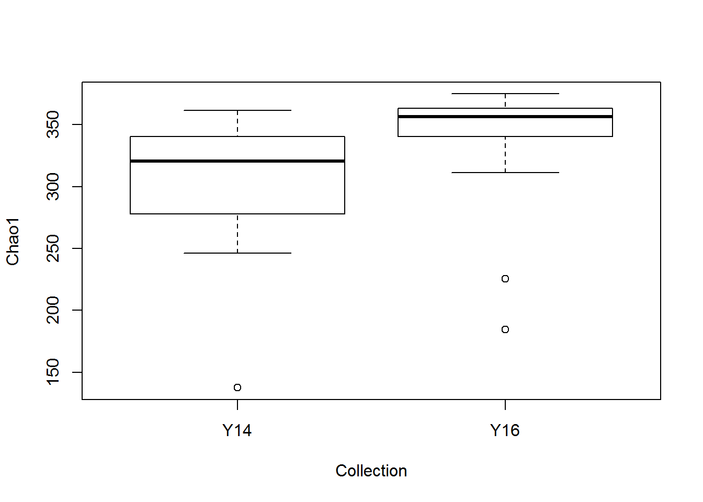

Chapter 5 Alpha-Diversity
We went over the concept of alpha-diversity in Chapter 3.3.1 and now we get to actually estimate these indices in R. Fortunately, producing these indices is straight forward using the phyloseq environment. We will explore the functions that calculate various alpha-diversity indices and how to analyze them by groups. If you recall, some of the richness measurements adjust for the number of taxa found as singletons and doubletons. Therefore, some would argue that using filtered data is not appropriate, but I tend to believe it is a balance between removing spurious taxa in 16S data while maintaining true low abundant taxa. Your filtering criteria should not be so strong to remove ALL low abundant taxa. That would defeat the purpose of maximizing your sampling depth to discover true low abundant taxa. Some of these functions will give a warning if they sense strong filters.
5.1 phyloseq package
Let’s use the estimate_richness function to calculate alpha-diversity indices in the UCD-T2DM Rat data. We will use the phyloseq object that we pre-processed in Chapter 4.3.1.
5.1.1 estimate_richness()
# You can specify specific indices to calculate by using the 'measures' argument, see help page, ?estimate_richness
UCDrats_Adiv <- estimate_richness(phyobj_d10p25)
# View object
head(UCDrats_Adiv)## Observed Chao1 se.chao1 ACE se.ACE Shannon Simpson
## BP.K2491 322 332.9286 6.853401 329.8674 8.288581 4.164139 0.9649630
## BP.H931 264 267.4737 2.910417 268.9841 7.687761 3.674326 0.9164394
## BP.H933 279 282.9286 3.337384 283.7086 7.368780 3.743879 0.9155674
## BP.H1147 345 357.3636 7.952144 350.6429 8.879509 4.004695 0.9548076
## BP.H1157 336 356.3125 10.512706 348.4945 8.949091 3.542787 0.8986565
## BP.K2503 327 342.4000 8.680170 336.2866 8.703965 3.702618 0.9287288
## InvSimpson Fisher
## BP.K2491 28.541288 48.16245
## BP.H931 11.967365 40.05883
## BP.H933 11.843766 41.24267
## BP.H1147 22.127608 52.54106
## BP.H1157 9.867431 50.45967
## BP.K2503 14.030907 48.37238The output provides all indices that we covered, “Observed”, “Chao1”, “ACE”, and “Shannon”, plus a few extras. It is not attached to the phyloseq object, so we will need to extract the Sample Metadata and attach it to these data. This will be demonstrated soon.
5.2 microbiome package
There are several functions in the microbiome that measure alpha-diversity. They are named based on what is measured, e.g., dominance, richness, rarity, etc.
5.2.1 richness()
Returns ‘observed’ and ‘chao1’ estimates. The chao1 estimate varies slightly from the estimate_richness version. The former is calculated based on Chao (Scand J Stat, 1984), while the latter uses the estimateR function from the vegan package. Details can be found at the help page, ?vegan::estimateR.
# You can specify specific index/indices to calculate by using the 'index' argument
UCDrats_Adiv_rich <- richness(phyobj_d10p25)
# View abbreviated object
head(UCDrats_Adiv_rich)## observed chao1
## BP.K2491 322 334.4615
## BP.H931 264 268.0000
## BP.H933 279 283.6538
## BP.H1147 345 359.4500
## BP.H1157 336 358.5333
## BP.K2503 327 344.28575.2.2 dominance()
Returns 7 estimates of dominance. Note, that the Simpson’s index from dominance is in a different unit then the Simpson’s index from estimate_richness, but they are the same. We will demonstrate this by plotting both.
# You can specify specific index/indices to calculate by using the 'index' argument
UCDrats_Adiv_dom <- dominance(phyobj_d10p25)
# View abbreviated object
head(UCDrats_Adiv_dom)## dbp dmn absolute relative simpson core_abundance
## BP.K2491 0.1089710 0.1721524 4198 0.1089710 0.03503696 0.9879296
## BP.H931 0.2545411 0.3236617 7413 0.2545411 0.08356058 0.9845826
## BP.H933 0.2595144 0.3357977 9267 0.2595144 0.08443260 0.9764485
## BP.H1147 0.1345937 0.2221775 5019 0.1345937 0.04519241 0.9657549
## BP.H1157 0.2855834 0.3723020 11220 0.2855834 0.10134351 0.9618713
## BP.K2503 0.2095389 0.3214817 8734 0.2095389 0.07127123 0.8773811
## gini
## BP.K2491 0.8493294
## BP.H931 0.8888539
## BP.H933 0.8759507
## BP.H1147 0.8586950
## BP.H1157 0.8892545
## BP.K2503 0.8867204# Comparing Simpson's index from estimate_richness() output
plot(UCDrats_Adiv$Simpson, UCDrats_Adiv_dom$simpson, xlab="estimate_richness()", ylab="dominance()")
It is a perfect linear relationship.
5.2.3 evenness()
Returns 5 estimates of evenness. Note, there are several variants to the Simpson’s index. evenness returns Simpson’s evenness, which is different than Simpson’s dominance from estimate_richness and dominance.
# You can specify specific index/indices to calculate by using the 'index' argument
UCDrats_Adiv_even <- evenness(phyobj_d10p25)
# View abbreviated object
head(UCDrats_Adiv_even)## camargo pielou simpson evar bulla
## BP.K2491 0.1862695 0.7211190 0.08863754 0.2147279 0.3376624
## BP.H931 0.1896463 0.6589597 0.04533093 0.2227112 0.3188006
## BP.H933 0.2077114 0.6648444 0.04245078 0.2310484 0.3286754
## BP.H1147 0.1625825 0.6853195 0.06413799 0.2325972 0.3106326
## BP.H1157 0.1303117 0.6090286 0.02936735 0.2133367 0.2670447
## BP.K2503 0.1385092 0.6394894 0.04290797 0.2091379 0.27747275.2.4 rarity()
Returns 4 estimates of rarity.
# You can specify specific index/indices to calculate by using the 'index' argument
UCDrats_Adiv_rar <- rarity(phyobj_d10p25)
# View abbreviated object
head(UCDrats_Adiv_rar)## log_modulo_skewness low_abundance noncore_abundance
## BP.K2491 2.059103 0.1453380 0
## BP.H931 2.058384 0.1106342 0
## BP.H933 2.056569 0.1204178 0
## BP.H1147 2.059638 0.1330383 0
## BP.H1157 2.059311 0.1345194 0
## BP.K2503 2.059966 0.1159013 0
## rare_abundance
## BP.K2491 0
## BP.H931 0
## BP.H933 0
## BP.H1147 0
## BP.H1157 0
## BP.K2503 05.3 Data analysis
Now that we know how to estimate a wide range of alpha-diversity measurements, we now want to know whether the indices are altered by our experimental treatments. We will continue to work with the UCD-T2DM rat dataset. Remember, there are 5 groups, but also 2 collection periods. We will use a 1-way ANOVA for the rat groups and block by collection year.
We will cover how to measure a single measurement first, and then go through the workflow of assessing all indices at the same time.
Let’s see if there is a difference in Chao1. First, we need to combine the diversity measurements with our Sample Metadata.
# Extract Sample Metadata
UCDrats_MetaData <- meta(phyobj_d10p25)
# Make matching columns for both Alpha-diversity and metadata data frames using the row names
# Sample Metadata already has matching column, but will need to create if not in data frame.
UCDrats_Adiv$SampleID <- rownames(UCDrats_Adiv)
# Join alpha-diversity and metadata
UCDrats_Adiv_DF <- full_join(UCDrats_MetaData, UCDrats_Adiv)## Joining, by = "SampleID"Now, let’s plot Chao1 by group. We can quickly do this with the boxplot() function using the formula notation described in Chapter 2.9.2. It is a base plotting function, so probably not publication quality. We just want to visually see if there are difference in the distribution of samples by group.
# Boxplot by Groups
UCDrats_MetaData <- boxplot(Chao1 ~ GroupAbbrev, data=UCDrats_Adiv_DF)
# Boxplot by collection year
UCDrats_MetaData <- boxplot(Chao1 ~ Collection, data=UCDrats_Adiv_DF)
Looks like the pre-diabetics (PD) and recent-diabetics (RD) rats may have higher diversity compared to the rats with more advanced diabetes (D3M and D6M). Also appears that rats collected in 2016 may have higher diversity compared to those collected in 2014. Let’s see if these differences are statistically significant.
# Assess ANOVA on Chao1
Chao1ANOVA <- aov(Chao1 ~ GroupAbbrev + Collection, data=UCDrats_Adiv_DF)
# View ANOVA table
summary(Chao1ANOVA)## Df Sum Sq Mean Sq F value Pr(>F)
## GroupAbbrev 4 40082 10021 6.205 0.000403 ***
## Collection 1 7480 7480 4.631 0.036347 *
## Residuals 49 79137 1615
## ---
## Signif. codes: 0 '***' 0.001 '**' 0.01 '*' 0.05 '.' 0.1 ' ' 1Both ‘GroupAbbev’ and ‘Collection’ effects are significant. Now, which groups differ from each other.
# Using the tukey HSD test.
TukeyHSD(Chao1ANOVA, "GroupAbbrev")## Tukey multiple comparisons of means
## 95% family-wise confidence level
##
## Fit: aov(formula = Chao1 ~ GroupAbbrev + Collection, data = UCDrats_Adiv_DF)
##
## $GroupAbbrev
## diff lwr upr p adj
## D6M-D3M 8.563722 -46.462146 63.58959 0.9919255
## LSD-D3M 15.997278 -31.509215 63.50377 0.8742124
## PD-D3M 58.227646 13.050300 103.40499 0.0054965
## RD-D3M 66.050235 16.323572 115.77690 0.0039501
## LSD-D6M 7.433555 -46.693346 61.56046 0.9949982
## PD-D6M 49.663924 -2.430676 101.75852 0.0684687
## RD-D6M 57.486513 1.400902 113.57212 0.0420272
## PD-LSD 42.230368 -1.847607 86.30834 0.0663569
## RD-LSD 50.052957 1.322922 98.78299 0.0413906
## RD-PD 7.822589 -38.639677 54.28485 0.9891199Looks like the Chao1 index in RD rats is greater than in both the D3M and D6M rats, while the Chao1 index in PD is higher than D3M and approaches significance relative to D6M.
This is not a stats course, so we cannot go over every statistical approach that R offers. However, these indices can be treated like any other data. For example you could correlate it to other continuous data, e.g., blood glucose, dietary intake data, etc.
Now, let’s say we wanted to analyze the rest. We could copy and paste this workflow, and then change Chao1 to Shannon in every object. But, that may lead to errors that we may not notice. For example, you may think you have an output for the Shannon index, but oops, you still have Chao1 in your formula. It would be much better if R did it all of the heavy work for us. Let’s see how this can be done.
This next example includes immediate and advance coding. Examples of this workflow were shown in Chapters 2.8.4 and 2.8.6.
# Start with the combined data frame, UCDrats_Adiv_DF, and rearrange it into a tall format.
UCDrats_Adiv_DF_Tall <- UCDrats_Adiv_DF %>% gather(AlphaDiv, value, -(SampleID:Collection))
# Calculate means and sd
AdivMeans <- UCDrats_Adiv_DF_Tall %>%
group_by(AlphaDiv, GroupAbbrev, Collection) %>%
summarise(MEAN = mean(value))
# Make new column combining effect columns, and then arrange to wide format
AdivMeans <- AdivMeans %>%
as.data.frame() %>%
mutate(GroupYear = paste(GroupAbbrev, Collection, sep="_")) %>%
dplyr::select(-GroupAbbrev, -Collection) %>%
spread(GroupYear, MEAN)
# Extract the string labels of all indices
AdivIndices <- unique(UCDrats_Adiv_DF_Tall$AlphaDiv)
# Use sapply() to get p-values from the ANOVAs
AdivANOVA_P <- sapply(AdivIndices, function(x) {
# Subset by Alpha diversity index
DAT <- UCDrats_Adiv_DF_Tall[UCDrats_Adiv_DF_Tall$AlphaDiv %in% x,]
# Use subsetted data in ANOVA
AOV <- aov(value ~ GroupAbbrev + Collection, data=DAT)
# Extract p-value
AOV_P <- round(summary(AOV)[[1]][1:2,"Pr(>F)"], 5)
# Name vector elements if > 2 effects.
# The order should follow the order in which they were coded into the ANOVA.
names(AOV_P) <- c("GroupAbbrev", "Collection")
# return final object
AOV_P
})
# Transpose AdivANOVA_P and coerce to data frame
tAdivANOVA_P <- t(AdivANOVA_P) %>% as.data.frame()
# Calculate FDR (really should apply across all tests, not by effect...)
tAdivANOVA_P$GroupAbbrev_FDR <- p.adjust(tAdivANOVA_P$GroupAbbrev, method="fdr")
tAdivANOVA_P$Collection_FDR <- p.adjust(tAdivANOVA_P$Collection, method="fdr")
# Add AlphaDiv column with row names to match AdivMeans object
tAdivANOVA_P$AlphaDiv <- rownames(tAdivANOVA_P)
# Join tAdivANOVA_P and AdivMeans
AdivMeansAOVresults <- full_join(AdivMeans, tAdivANOVA_P, by="AlphaDiv")
# View results
AdivMeansAOVresults## AlphaDiv D3M_Y14 D3M_Y16 D6M_Y14 D6M_Y16 LSD_Y14
## 1 ACE 281.8517222 312.3514805 324.5529581 254.2882149 261.800819
## 2 Chao1 280.3871580 313.8759079 326.1230037 249.2981283 261.193784
## 3 Fisher 41.9759331 45.1747667 48.0912433 37.1303328 38.644968
## 4 InvSimpson 20.3555362 19.2820119 18.7224463 13.5182113 18.852212
## 5 Observed 273.6666667 306.0000000 317.4000000 242.5000000 256.200000
## 6 se.ACE 8.0136821 8.1249692 8.6005251 7.7482355 7.327363
## 7 se.chao1 4.2440218 4.7121530 5.5009447 4.2026271 3.908604
## 8 Shannon 3.7481400 3.8612767 3.8611519 3.5647088 3.858031
## 9 Simpson 0.9430829 0.9409606 0.9429804 0.9259768 0.939014
## LSD_Y16 PD_Y14 PD_Y16 RD_Y16 GroupAbbrev Collection
## 1 344.9607688 344.4031812 357.7353626 361.3101107 0.00030 0.03666
## 2 347.6157449 345.6883266 359.2693875 361.6595519 0.00040 0.03635
## 3 51.0866685 51.9029751 55.6493218 55.2750479 0.00003 0.04327
## 4 17.5565617 18.3841252 26.9384674 22.3568960 0.30941 0.52910
## 5 338.4285714 340.5000000 353.1111111 357.7000000 0.00010 0.03960
## 6 8.8176946 8.4503873 8.6271711 8.6868210 0.14873 0.05744
## 7 5.6763162 3.9463138 4.3373940 3.0864254 0.38306 0.45193
## 8 3.8543452 4.0414242 4.2396395 4.0990683 0.00125 0.49366
## 9 0.9392268 0.9417145 0.9564142 0.9490509 0.47243 0.72189
## GroupAbbrev_FDR Collection_FDR
## 1 0.0009000 0.0973575
## 2 0.0009000 0.0973575
## 3 0.0002700 0.0973575
## 4 0.3978129 0.5952375
## 5 0.0004500 0.0973575
## 6 0.2230950 0.1033920
## 7 0.4309425 0.5952375
## 8 0.0022500 0.5952375
## 9 0.4724300 0.7218900Now we have means, P-values, and FDR for all indices. Note, the “se.ACE” and “se.Chao1” can be removed as they are standard error calculations of ACE and Chao1 indices.